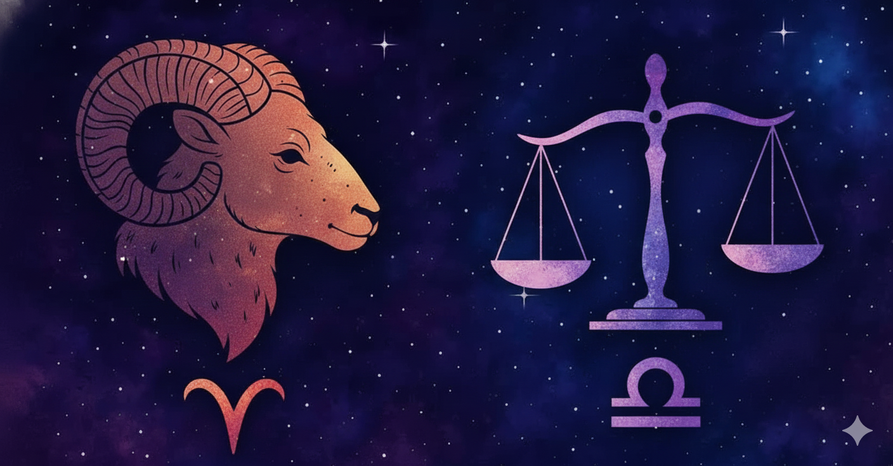

Sol em Touro (13°): Persistente, sensual, amante do conforto. Quando decides algo, ninguém te faz mudar de ideia. Tem um senso estético apurado e ama estabilidade. Teimosia? Sim. Mas também lealdade inabalável.
Lua em Touro (19°): Emoções estáveis, mas profundas. Precisa se sentir segura emocionalmente para se abrir. Valoriza o toque, o carinho, a rotina. Pode ser um pouco possessiva.
Ascendente em Áries: Impulsiva, direta, cheia de atitude. Gosta de fazer as coisas do seu jeito e detesta depender dos outros. Sua imagem é de força, coragem e zero paciência pra enrolação.
🔮 Planetas Pessoais
Mercúrio em Áries: mente rápida, comunicação direta e sincera (nem sempre diplomática). Opinião forte e fala afiada.
Vênus em Touro: ama com intensidade, lealdade e um toque de sensualidade. Valoriza conforto e estabilidade nos relacionamentos.
Marte em Peixes: age com empatia e intuição. Gosta de ajudar, mas pode guardar ressentimentos. Energia criativa.
🌬️ Planetas Geracionais
Júpiter em Virgem: crescimento pelo trabalho duro, detalhes e organização. Fé na prática.
Saturno em Aquário: responsabilidade coletiva. Aprende a ser mais flexível e inovadora.
Urano e Netuno em Capricórnio: revolução nas estruturas, quebra de padrões tradicionais.
Plutão em Escorpião: geração intensa, emocionalmente profunda, com sede de transformação.
⚡ Quíron em Leão (estimado)
Ferida ligada à auto expressão e reconhecimento. Pode sentir que não é valorizada ou não tem "brilho" suficiente. A cura vem ao empoderar os outros e aprender a brilhar sem medo.
Sombra: Você pode ter medo de perder tudo o que construiu ou se apegar excessivamente às coisas materiais como forma de se sentir seguro. A falta de autoestima também pode surgir aqui, com a crença de que não é suficiente ou digno.
Luz: A cura vem quando você começa a entender que o verdadeiro valor está na sua essência e no que você oferece ao mundo com sua energia de amor e estabilidade. Ao curar essa ferida, você se torna um mestre em ensinar aos outros como se valorizar e encontrar o equilíbrio entre o material e o espiritual.
🔥 Vesta em Touro — A guardiã do sagrado prazer
Vesta em Touro mantém o fogo interior aceso através da estabilidade, da beleza e do conforto. Seu foco e dedicação aparecem quando está em paz, cercada de tudo o que te dá prazer: comida gostosa, um ambiente bonito, bons cheiros, carinho e silêncio. O seu templo interior é um jardim tranquilo onde você cultiva rituais de autocuidado e bem-estar.
Sombra: apego ao conforto pode fazer com que evite mudanças importantes.
Luz: tem uma capacidade incrível de manter a calma, criar estabilidade e inspirar outros com sua presença serena e forte.
⚔️ Palas Athena em Touro — A estrategista prática
Palas em Touro pensa com firmeza e age com sabedoria calma. Você tem uma mente prática, que valoriza o que é útil, concreto e sensorial. Suas estratégias são pacientes e seguras — não se precipita. É uma excelente conselheira quando o assunto é dinheiro, estética, nutrição ou qualquer coisa que envolva o mundo físico. Você defende seus valores com lógica e firmeza.
Sombra: teimosia nas ideias e resistência ao novo.
Luz: sabe construir soluções duradouras com criatividade prática e muito bom gosto.
🌈 Inferno, Paraíso e Escravo Astral
Inferno Astral – Áries: irritação com impulsividade, agressividade e falta de planejamento. Pode te tirar do sério!
Paraíso Astral – Virgem: conexão natural. Você se sente bem, compreendida e estimulada.
Escravo Astral – Escorpião: signo que tende a se doar pra você, mas cuidado com manipulações e jogos psicológicos.
♌️ Mapa Astral Sexual
Vênus em Touro: sensualidade à flor da pele. Precisa de toque, cheiro, carinho. Sedutora pela calma e consistência.
Marte em Peixes: sexualidade mais intuitiva e emocional. Curte conexões profundas e fantasias.
Casa 8 (estimada) em Escorpião: intensidade, transformação e uma energia magnética no sexo. Gosta de viver o prazer como se fosse transcendência.
🔍 Afinidade com os Elementos
Terra (Touro, Virgem, Capricórnio): ✔✔✔ – É sua base. Praticidade, estabilidade, sensualidade.
Água (Câncer, Peixes, Escorpião): ✔✔ – Complementa sua profundidade emocional.
Fogo (Áries, Leão, Sagitário): ✔ – Agita sua rotina, mas pode gerar conflito.
Ar (Gêmeos, Libra, Aquário): ❌ – Falta de enraizamento. Pode parecer volátil ou superficial demais pra você.
🪩 Combinações e Tretas com Signos
Melhores matches: Virgem, Capricórnio, Câncer
Pode dar bom com: Peixes, Escorpião
Tretas anunciadas: Aquário, Áries, Gêmeos
💼 Carreira e Missão Profissional
Meio do Céu (MC) em Aquário: O Meio do Céu representa sua imagem pública e como você é vista no mundo. Com MC em Aquário, você tem um olhar inovador e progressista. Seu caminho profissional pode envolver criatividade, novas tecnologias ou ideias revolucionárias. Você tem o potencial de ser uma líder que quebra barreiras e traz algo único para o mundo. Profissões relacionadas a inovação, ciência, tecnologia, socialização de ideias ou até movimentos sociais podem te atrair.
Casa 6 (Trabalho e Rotina) em Gêmeos: A Casa 6 fala sobre seu trabalho diário e a maneira como você lida com as rotinas. Com Gêmeos aqui, você pode gostar de ambientes dinâmicos, que exigem aprendizado constante e troca de ideias. Trabalhar em algo que envolva comunicação, mídia, ensino ou áreas que exijam adaptabilidade e capacidade de fazer múltiplas tarefas ao mesmo tempo será algo natural para você.
Casa 10 (Carreira e Ambições) em Leão: A Casa 10 indica suas ambições profissionais. Com Leão aqui, você busca ser reconhecida e admirada no que faz. A carreira é uma extensão de quem você é, e você quer brilhar. Você é uma líder nata, que gosta de ser vista e apreciada por seu trabalho. Seu sucesso vem com autenticidade e confiança. Pode se destacar em profissões onde a exposição ao público, o carisma e a liderança sejam valorizados (como gestão, apresentações, arte ou comunicação).
Mercúrio em Touro (Comunicativa e Prática): Mercúrio é o planeta da mente e da comunicação, e com ele em Touro, você é prática, lógica e pensa de forma estruturada. Isso se reflete na sua abordagem profissional, onde você provavelmente prefere construir as coisas de maneira sólida e duradoura. Você possui uma mente prática, que lida bem com questões financeiras e práticas, e vai sempre buscar segurança e estabilidade em sua carreira.
Vênus em Gêmeos (Criativa e Sociável): Vênus, o planeta do amor e da estética, em Gêmeos, te torna criativa, sociável e com uma abordagem versátil. Isso é bom para uma carreira que envolva relações públicas, marketing, vendas ou qualquer área que envolva comunicação criativa. Além disso, você pode se sair bem em profissões que exigem boa comunicação interpessoal e uma mente aberta para aprender constantemente.
✨ Áreas de Sucesso:
Tecnologia, Inovação e Pesquisa: Seu MC em Aquário te dá uma grande afinidade com as áreas de tecnologia, inovação e pesquisa. Se você seguir esse caminho, pode se destacar em trabalhos que envolvam inteligência artificial, redes sociais, startups ou até mesmo algo voltado para questões sociais.
Educação e Comunicação: Gêmeos na Casa 6 e Vênus também em Gêmeos indicam que você pode se sair bem em áreas de ensino, comunicação e até jornalismo. Sua capacidade de lidar com informações e se comunicar de maneira fluida será uma grande vantagem.
Gestão e Liderança: Com Leão na Casa 10, você se destaca naturalmente em posições de liderança, onde sua habilidade de tomar decisões e inspirar os outros se sobressaem. O trabalho que coloca você em uma posição de destaque, onde pode brilhar e liderar, será um lugar onde você vai se sentir realizada.
Resumo dos Signos Pessoais
Sol: Touro ♉️
Ascendente: Áries ♈️
Descendente: Libra ♎️
Lua: Aquário ♒️
Mercúrio: Áries ♈️
Vênus: Áries ♈️
Marte: Peixes ♓️
Ascendente/Descendente

Ascendente em Áries ♈️
O Ascendente é o signo que estava surgindo no horizonte no momento do seu nascimento.
Em Áries ele te dá:
Postura direta e determinada
Primeira impressão forte, corajosa e independente
Energia de liderança e iniciativa
Zero paciência pra enrolação
Mesmo sendo Taurina por dentro, Por fora você chega chegando.
Descendente em Libra ♎️
O Descendente é sempre o signo oposto ao Ascendente e fala muito sobre:
Relacionamentos
O tipo de pessoa que você atrai
O que você busca no outro
Em Libra indica que você:
Se atrai por pessoas charmosas, educadas e equilibradas
Busca parceria, diálogo e justiça nas relações
Aprende muito sobre ceder, negociar e cooperar
Precisa de harmonia, mesmo sendo intensa
É o clássico:
“Eu sou fogo (Áries), mas preciso de alguém que traga equilíbrio (Libra)” 💞
Casas Astrológicas por Signo
Touro: Aparência sólida e confiável.
Gêmeos: Comunicação e finanças com flexibilidade.
Câncer: Comunicação emocional.
Leão: Orgulho da família.
Virgem: Namoros exigentes.
Libra: Saúde emocional em equilíbrio.
Escorpião: Relações intensas.
Sagitário: Intimidade com liberdade.
Capricórnio: Filosofia de vida prática.
Aquário: Inovação na carreira.
Peixes: Amizades sensíveis.
Áries: Coragem contra inimigos ocultos.
Aspectos Planetários Relevantes
Sol trígono Marte: Força de vontade natural.
Lua quadratura Plutão: Emoções profundas e transformadoras.
Vênus conjunção Mercúrio: Sabe expressar sentimentos com clareza.
Saturno trígono Vênus: Relacionamentos duradouros e responsáveis.
Nodo Norte e Asteroides
Nodo Norte em Sagitário: missão de vida ligada à verdade, aventura e expansão.
Juno em Touro: compromisso seguro e leal.
Vesta em Leão: dedicação à criatividade e auto expressão.
Ceres em Gêmeos: nutre com palavras e conversas.
Pallas em Capricórnio: sabedoria estratégica e prática.
🌌 Asteroides Especiais
Tem vários, mas alguns que podem brilhar no seu mapa:
🌑 Lilith: seu lado selvagem, autêntico e rebelde.
Lilith em Touro é pura sensualidade, mas também resistência. Você tem um instinto muito forte pra estabilidade, conforto e prazer — mas não se engane, porque a Lilith aqui desafia qualquer tentativa de controle. Você pode provocar revoluções silenciosas quando tentam mexer no que é seu. No amor e no sexo, gosta de segurança, mas também quer liberdade pra ser quem é sem julgamento. Seu corpo é território sagrado — quem quiser que respeite!
Sombra: pode resistir a mudanças por medo da perda ou se prender a relações por segurança material.
Luz: empoderamento através do autocuidado, prazer e valorização pessoal.
🌾 Ceres: seu jeito de cuidar e nutrir os outros.
Ceres aqui é mãe terra total! Você cuida dos outros oferecendo conforto, comida boa, aconchego, presentes e muito amor físico. Seu amor se expressa de forma prática: você faz por quem ama. Também precisa de segurança emocional e estabilidade pra se sentir nutrida. Cultiva laços duradouros com base no que é tangível.
Sombra: pode superproteger ou esperar demais dos outros em troca do seu cuidado.
Luz: tem um talento incrível pra restaurar, plantar, curar e oferecer suporte com constância.
💍 Juno: o tipo de compromisso que você busca em relacionamentos.
Quando se trata de compromisso, Juno em Touro quer algo real, leal e duradouro. Você busca uma relação sólida, onde confiança e constância sejam prioridade. Fidelidade é tudo, mas também sensualidade e prazer. Pode levar tempo pra se entregar, mas quando vai, é pra sempre (ou pelo menos é o plano). Parcerias com base em valores compartilhados são essenciais.
Sombra: tendência a ciúmes ou apego excessivo.
Luz: parceira estável, afetuosa e com forte senso de lealdade.